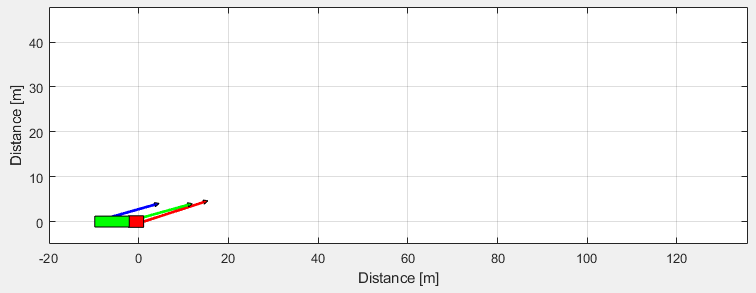
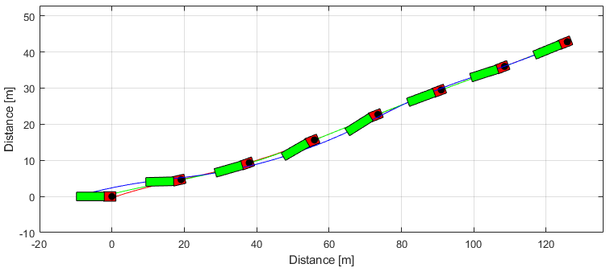
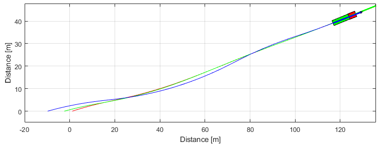

Template Articulated
This template shows how to simulate an articulated vehicle and plot the results.

Contents
Simulation models and parameters
First, all classes of the package are imported with
clear ; close all ; clc import VehicleDynamicsLateral.*
Choosing tire and vehicle model. In this case, the parameters are defined by the user.
% Choosing tire TireModel = TirePacejka(); TireModel.a0 = 1; TireModel.a1 = 2; TireModel.a2 = 700; TireModel.a3 = 5000; TireModel.a4 = 80; TireModel.a5 = 0; TireModel.a6 = 0; TireModel.a7 = 0.6; % Choosing vehicle VehicleModel = VehicleArticulatedNonlinear(); VehicleModel.mF0 = 5200; VehicleModel.mR0 = 2400; VehicleModel.mF = 6000; VehicleModel.mR = 10000; VehicleModel.mM = 17000; VehicleModel.IT = 46000; VehicleModel.IS = 450000; VehicleModel.lT = 3.5; VehicleModel.lS = 7.7; VehicleModel.c = -0.3; VehicleModel.nF = 2; VehicleModel.nR = 4; VehicleModel.nM = 8; VehicleModel.wT = 2.6; VehicleModel.wS = 2.4; VehicleModel.muy = 0.3; VehicleModel.deltaf = 0; VehicleModel.deltar = 0; VehicleModel.deltam = 0; VehicleModel.Fxf = 0; VehicleModel.Fxr = 0; VehicleModel.Fxm = 0; % The System is completely defined once we atribute the chosen tire model % to the vehicle object. VehicleModel.tire = TireModel;
Choosing simulation time span
T = 7; % Total simulation time [s] resol = 50; % Resolution TSPAN = 0:T/resol:T; % Time span [s]
To define a simulation object (simulator) the arguments must be the vehicle object and the time span.
simulator = Simulator(VehicleModel, TSPAN);
Changing initial conditions of the simulation object
simulator.ALPHAT0 = 0.3; % Initial tractor side slip angle [rad] simulator.dPSI0 = 0.25; % Initial tractor yaw rate [rad/s] simulator.dPHI0 = 0.25; % Initial articulation rate [rad/s]
Run simulation
To simulate the system we run the Simulate method of the simulation object.
simulator.Simulate();
Results
g = Graphics(simulator); g.TractorColor = 'r'; g.SemitrailerColor = 'g'; g.Frame(); g.Animation(); % g.Animation('html/TemplateArticulated'); % Uncomment to save animation gif 